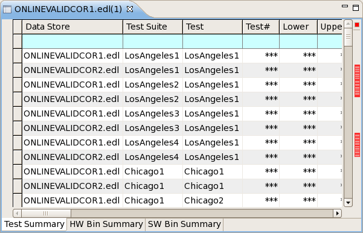

Correlation data store structure
A correlation data store is a combination of a base data log and related test results from additional data logs or streams. It also contains additional columns that indicate how these additional test results differ from the base result.
Rows
The correlation data store contains all test results from the base data log (the one that was selected when the Correlate command was chosen) in the same order as in the base data log.
In addition, it contains all results for the same tests from the other correlated data stores. These test results are sorted so that all results for one test appear together.
The correlation data store does not contain results from test that are not found in the base data log, even if they are contained in one or more of the correlated data logs.
Columns
The correlated data store contains all columns from the base data log. In addition, it contains new columns showing how the results of the test from the additional data stores differ from the results of the test in the base data store:
- Data Store: The data store from which the data for this row was taken.
- ΔMean: The difference between the value in the Mean column of the test from the base data log and the value in the Mean column of the current test.
- ΔMean%: The relative difference (in percent) between the value in the Mean column of the test from the base data log and the value in the Mean column of the current test.
- ΔSdev: As ΔMean, but for the Sdev column.
- ΔSdev%: As ΔMean%, but for the Sdev column.
- ΔRange%: The value in the ΔMean column as a percentage of the test range of the base data log (difference between the highest and the lowest measured values).
- ΔStDev%: The value in the ΔMean column as a percentage of the standard deviation of the test from the base data log.
- ΔCp: As ΔMean, but for the Cp column.
- ΔCp%: As ΔMean%, but for the Cp column.
- ΔCpk: As ΔMean, but for the Cpk column.
- ΔCpk%: As ΔMean%, but for the Cpk column.
- ΔCpl: As ΔMean, but for the Cpl column.
- ΔCpl%: As ΔMean%, but for the Cpl column.
- ΔCpu: As ΔMean, but for the Cpu column.
- ΔCpu%: As ΔMean%, but for the Cpu column.
- ΔTime: As ΔMean, but for the Time column.
- ΔTime%: As ΔMean%, but for the Time column.
- ΔTS Time: As ΔMean, but for the TS Time column.
- ΔTS Time%: AsΔMean%, but for the TS Time column.
These columns may appear in the HW Bin Summary and SW Bin Summary tabs of correlated data store views:
- Data Store: The data store from which the data for this row was taken.
- ΔDevice#: As ΔMean, but for the Device# column.
- ΔDevice%: As ΔMean%, but for the Device% column.
Note that some of these columns may not be displayed, depending on the visible columns you have specified in the preferences.
All columns described above have an entry of "***" for tests from the base data log.
Example
This image shows a sample correlation data store in the summary view:

Note that there are additional columns and rows outside the section shown in the image.
Functional changes
- Introduced in SmarTest 7.2.0
- SmarTest 7.2.1: Added ΔCpl, ΔCpl%, ΔCpu, ΔCpu%, ΔPpk, ΔPpk%, ΔDevice#, and ΔDevice% columns.
- SmarTest 7.2.1: Renamed some columns.
- SmarTest 7.3.2: Added ΔRange% and ΔStDev% columns.